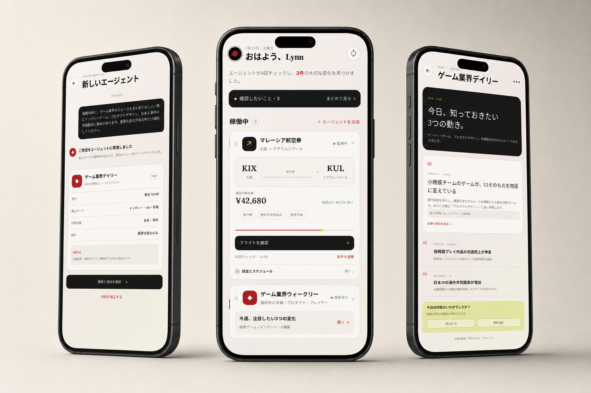
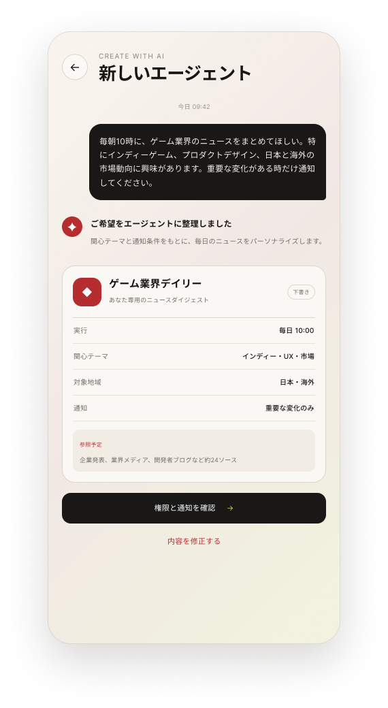
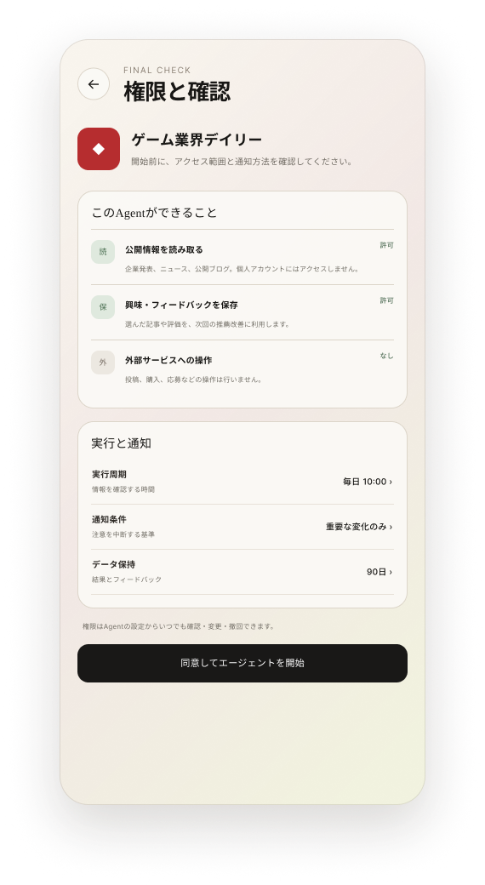
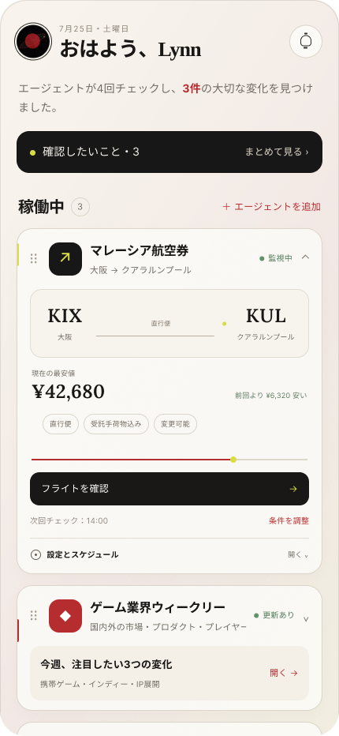
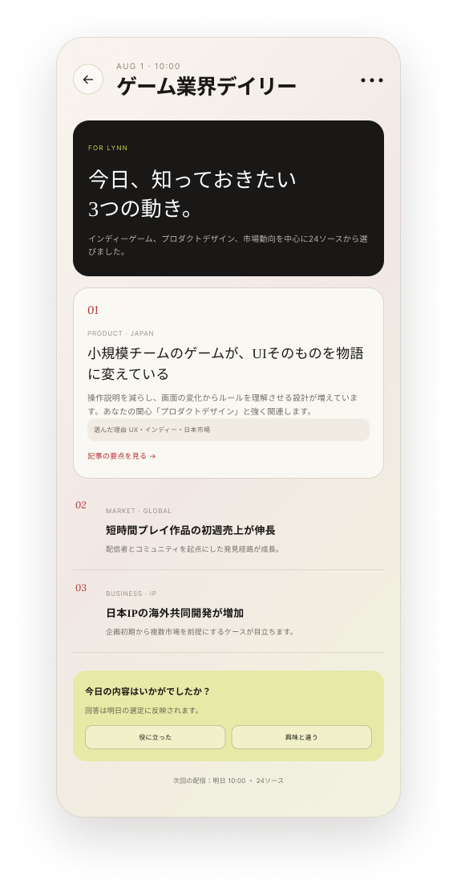
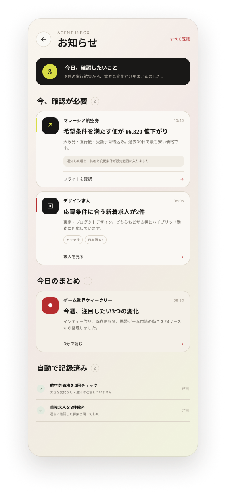
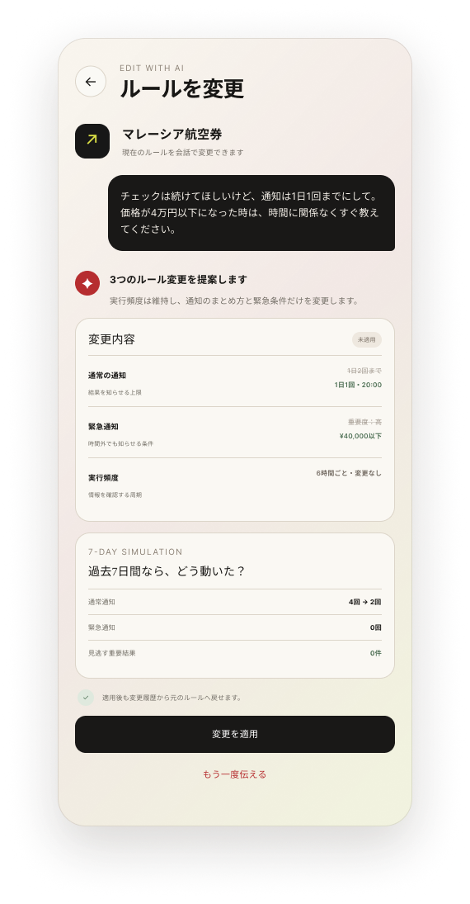

你平时会怎么用 AI？
研究上用得比较多吧。比如碰到一个我不太懂的概念，我会先问问 AI。有时候也会让它推荐几篇论文，或者先帮我把某个方向大概捋一下。不过它给我的东西，我一般还是会自己再确认。特别是论文，不会看完 AI 的总结就直接拿来用。

PROJECT / 003把需要反复交代的事，交给一个真正了解你的 AI 助手。
Orbit 是一个个人 Agent 的集中管理原型。用户可以在一个地方创建周期性任务、查看所有任务的运行状态，并确认 AI 今天完成了什么。它不是另一个需要反复对话的 Chatbot，而是让 AI 持续协助生活与工作的工具。
学习英语、追踪机票或了解行业新闻，往往不是只做一次，而是每天或每周持续发生。如果每次都要重新打开对话、重复说明需求，AI 仍然只是一个被动工具。Orbit 的核心是 Customize：让每个 Agent 按照个人目标、周期和提醒方式持续工作，并在一个地方统一管理。
当多个任务同时运行时，用户需要在一个页面掌握所有任务，而不是来回翻找聊天记录。
任务是否执行、执行到哪里、今天产生了什么结果，都应该能够被直观看见。
每天学习英语或查看行业新闻，不应该每天重新输入同样的要求。
访谈围绕日常 AI 使用、长期任务和信息可信展开，用来呈现概念阶段仍需验证的设计假设。
研究上用得比较多吧。比如碰到一个我不太懂的概念，我会先问问 AI。有时候也会让它推荐几篇论文，或者先帮我把某个方向大概捋一下。不过它给我的东西，我一般还是会自己再确认。特别是论文，不会看完 AI 的总结就直接拿来用。
最大的问题可能就是东西太散了。我每天会问很多问题，当时看完觉得挺有用的，但过几天再想找，就完全不记得是在哪个对话里了。有时候我明明记得自己问过，最后还是只能再问一遍。现在差不多就是你问一次、它答一次，然后这件事就结束了。它不会顺手帮你把以前问过的东西慢慢整理起来。
我可能会让它帮我盯一下新论文。论文一直在更新，但我不可能每天都去搜，忙一阵子没看就很容易漏掉。如果它能每天或者每周帮我看一下，只把和我研究比较相关的内容整理出来，我觉得会挺方便的。也不用每篇都写很长，先告诉我“这篇大概在做什么”“为什么可能和我有关”，我再决定要不要读。还有就是，我有时候会完全不知道下一步该做什么。如果它看完一些新研究以后，能顺便说说“这个方向是不是还能继续做”，或者给我几个想法，那也挺有帮助的。
这个我还是会比较担心。一般的信息错一点可能还好，但论文里有时候只是一个实验条件理解错了，意思就完全不一样了。如果它每天都给我整理，我也不可能一句一句重新检查。所以至少得让我知道内容是从哪篇论文来的、作者是谁、原文在哪里。最好重要的总结可以直接对应到原文。还有它自己想到的东西，也要和论文里真正写的内容分开，不然看久了以后，我可能也会搞不清到底是谁说的。
可能是减肥吧（笑）。我以前也用过记录饮食、卡路里之类的软件，但基本都没坚持多久。因为要自己找吃什么、自己记录，运动又在另外一个 App 里，慢慢就懒得弄了。如果 AI 能在固定时间提醒我一下，比如晚上告诉我明天可以吃什么，我吃完以后随便跟它说一句，它就帮我记下来，那可能会轻松一点。然后每周再告诉我，这周大概吃了多少、运动了多少，有没有什么变化。虽然我也不确定有了以后就真的能坚持（笑），但应该会想试试看。
Orbit 将 Home 设计成所有个人 Agent 的集中管理页。用户可以先看到最新完成的结果，再查看仍在持续运行的任务；需要时，也能进入某个 Agent，确认它的执行内容、权限和规则。
例如每天整理游戏行业新闻，或持续查看特价机票。
系统整理执行时间、关注主题、筛选条件和提醒方式。
启动前确认任务可以读取、保存和调用哪些信息。
任务按计划运行，并把值得确认的结果放到 Home 与 Inbox。
修改前检查变化，必要时可以退回之前的规则。
不用在多个对话之间切换，就能看到每个 Agent 的状态、最近结果和下一次运行时间。
执行中、等待确认和已经完成的任务使用清楚的状态区分。
一次设定执行周期和筛选条件，之后由 Agent 自动检查并生成结果。
用户先看摘要，就能判断这次结果是否值得立即打开。
每次修改都会显示变化和历史记录，避免新的要求反而破坏原有任务。

比如输入“每天上午十点整理游戏行业新闻，只在出现重要变化时提醒我”。Orbit 会自动生成任务草稿，整理执行时间、关注主题、地区、筛选条件和提醒方式。用户确认后，Agent 就会按照这个计划持续运行。

Final Check 会列出 Agent 可以读取哪些信息、会保存哪些内容、是否涉及外部操作，以及数据会保留多久。用户可以在这里调整权限，也可以在任务运行后随时撤回。

首页上方的“确认したいこと”集中显示 Agent 新完成、值得查看的结果；下方则列出所有持续运行的任务和当前状态。比如每天学习英语时，用户可以直接打开今天收到的文章；追踪机票时，也能先看到是否出现了新的低价。
Today’s ten-minute reading explores why narrative helps people retain new vocabulary.
Read the article, save three expressions, and answer one short question.
用户创建每日英语阅读任务后，Agent 会在固定时间选择适合水平与兴趣的文章，先说明今天的阅读重点，再保留原文与练习入口。无需每天重新输入要求，也能持续积累。

进入 Game Guild Kai Daily 后，顶部的 Memo 会先用一句话概括今天发生的主要变化，再提供详细信息。如果任务是追踪机票，摘要会直接提示“今天哪条路线降价了”，帮助用户决定是否马上查看和购买。

除了 App 内的 Agent Inbox，重要结果也会进入手机的系统通知中心。用户不必先打开 Orbit 才知道发生了什么；点击提醒后，可以直接回到对应任务的结果页面。

用户用自然语言修改需求后，AI 会重新检查任务规则，并列出本次变化。每次修改都会保留历史版本和运行记录；如果新规则不如原来的效果，用户可以快速退回之前的版本，再继续观察任务状态。